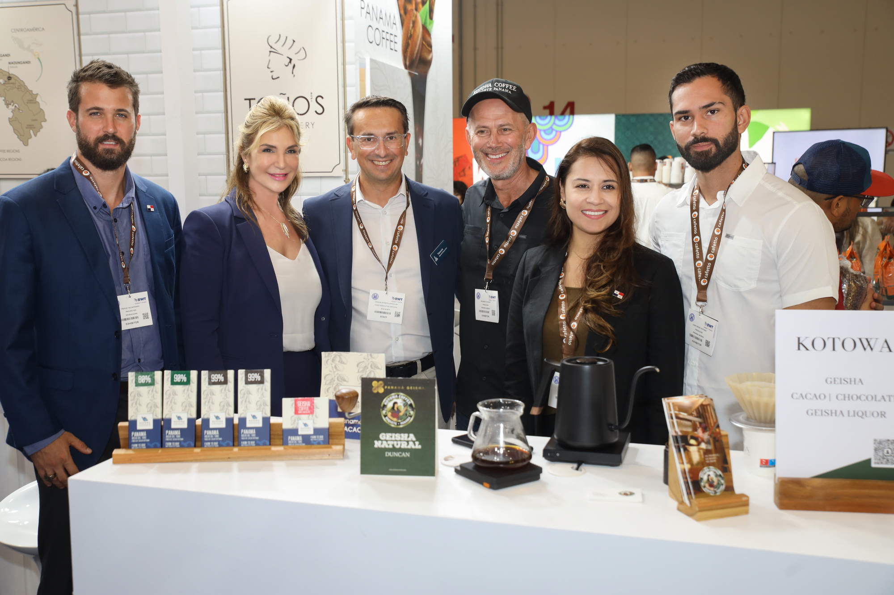

Panama Maracana
Stadium
Panama
Convention Center
Panama Maracana Stadium - 咖啡藝術展覽風華再現
Panama Convention Center - 國際交流平台 聚焦咖啡趨勢
馬拉卡納體育場成為今年 Panama Cafe Exhibition (PCE) 的矚目焦點，展示出令人驚艷的咖啡藝術創作。各地的藝術家以咖啡為畫筆，在咖啡渍上展現無限的創意，呈現出一系列獨一無二的藝術品。現場觀眾不僅能夠品味到優質的咖啡，還能夠沉浸在視覺和味覺的雙重享受之中，馬拉卡納體育場再度證明了咖啡藝術的無限可能性。
在巴拿馬會議中心，Panama Cafe Exhibition (PCE) 聚集了來自世界各地的咖啡業者，成為國際交流的咖啡平台。展區內匯聚了來自巴拿馬及其他咖啡產區的頂尖咖啡豆，參與者不僅能夠嘗試到多種風味豐富的咖啡，還能夠參與論壇和討論，深入了解咖啡趨勢和最新的技術創新。巴拿馬會議中心成為咖啡愛好者和業界專業人士共同交流的匯聚點，共同推動咖啡文化的發展。
